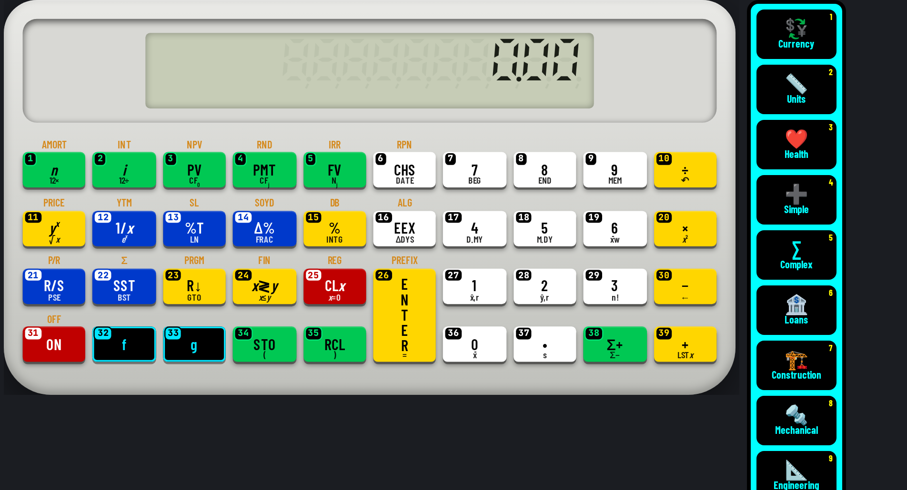

This manual belongs to the U-45 CALCULATORS app and describes calculator #45 — Financial RPN (landscape, platinum) exactly as it behaves in the app. Every worked example and every drill answer in this book was run on the app's own keys by an automated checker before printing; only results that matched were kept.
Keys are written as a chip showing the key number and its face, for example #1 n. Numbers follow the numbering printed on the keys (switch it on with “# On”). A shifted function is written as two chips: the shift key, then the key that carries the function.
RPN financial (ENTER separates numbers; n i PV PMT FV store or solve).
Open U-45 CALCULATORS, choose #45 from the home screen (or the jump list at the top), and the calculator appears with its numbered, colour-coded keys. Click or tap keys, or type on a keyboard.
Every key carries a small number in the same reading order as this manual (left→right, top→bottom; the navigation pad counts ▲ ▼ ◀ ▶ then its centre). Use “# On / # Off” in the bar above the calculator to show or hide them — the setting is remembered.
Keys are coloured by job: white = digits, yellow = operators/execute, blue = functions, green = memory/variables, red = clear/delete/power, black with cyan = shift/modes/menus/navigation. Press “Classic” to return to the original model colours and “Hi-Contrast” to come back.
Display text uses the U45 Display face, key legends use U45 Keys (a condensed face that stays readable on small keys) and key numbers / helper text use U45 Mono. All three are bundled inside the app, so they work offline.
The Copy button copies exactly what the display shows (indicators that are switched off are skipped) so you can paste a result into a message or spreadsheet.
Fit scales the calculator to your screen; 1:1 shows it at its design size. On a phone, Fit is the comfortable choice.
Reset rebuilds this calculator from scratch: display, memory, stack and modes return to their start-up state. Use it before each worked example in this manual.
On a computer you can type: digits, + − * / ^ ( ), Enter or = to execute, Backspace to delete, Esc to clear, arrows to move. Letters reach common functions (see the Keyboard shortcuts chapter).
Hover over (or long-press) a key to see “#number name”.
A cyan icon rail on the right of every calculator opens 15 panels: Currency (166 currencies, rates auto-updated from open.er-api.com or Frankfurter when online and cached with a date; the bundled dated snapshot is used offline), Units (exact SI factors), Health (published formulas, not medical advice), Simple, Complex, Loans, Construction, Mechanical and Engineering (30+ numbered tools each), Calendar generator, Customize (26 options, saved per calculator), Settings (31 options), History, Hide and View. On narrow phones the rail shows icons only.
Every calculation is logged per calculator with a date and time. Open History on the rail to search, re-use (types the input back into the calculator), copy, delete one, select several and delete, or delete all (asks for confirmation). History is stored encrypted on this device (AES-GCM); exporting it needs the passcode.
The green CS button between Restore and Social reads a problem from the camera, a photo, a PDF or a text file. Recognition (Tesseract OCR, English) runs offline on the device; an online language download is only used if you switch it on in Settings. Check and edit the recognised text, then Solve shows the steps offline. OCR is not available when the app is opened as a plain file:// page in a browser.
The layout selector between Fit and # offers Auto plus 12 layouts: 3D classic, 3D high-contrast, Classic, Pocket, Compact, Expanded, Desktop wide, Split, One-hand left, One-hand right, Large print and Minimal. Auto picks one for your screen and your choice is remembered per calculator. The View panel hides the top bars, the tool bar, the rail or everything (full screen); the round yellow ⤢ button at bottom-left (or Esc) always restores the normal view.
The Hide panel lists every button, rail icon and section of this calculator as tick boxes. Hiding is instant; unhiding asks for the app passcode.
Right-click, drag and long-press saving of images is blocked inside the app. Saving or sharing an image export (PNG, JPG, QR, calendar), printing a calendar, and downloading or sharing the app itself ask for the passcode, and exported images carry a U-45 watermark. Honest note: this cannot stop a screenshot or screen recording made by the operating system or another device.
U-45 CALCULATORS is an offline app: after the first load everything — including fonts — comes from the device.
| Colour | Group | Keys on this model |
|---|---|---|
| num | Digits & number entry | #6, #7, #8, #9, #16, #17, #18, #19, #27, #28, #29, #36, #37 |
| op | Operators & execute | #10, #11, #15, #20, #23, #24, #26, #30, #39 |
| fn | Functions | #12, #13, #14, #21, #22 |
| mem | Memory, variables & registers | #1, #2, #3, #4, #5, #34, #35, #38 |
| clr | Clear, delete & power | #25, #31 |
| mod | Shift, modes, menus & navigation | #32, #33 |
43 features: 26 live on the keys, 9 app/UI features, 8 planned (documented but not yet working — they are clearly marked and never used in examples).
Calculator #45 with key numbers shown (Hi-Contrast colours).
“Shift” = 2nd / f / SHIFT layer; “Alpha” = ALPHA layer; “3rd” = 3rd / g layer. A dot means the layer is empty on that key.
| # | Face | Shift | Alpha | 3rd | Group |
|---|---|---|---|---|---|
| 1 | n | AMORT | · | · | mem |
| 2 | i | INT | · | · | mem |
| 3 | PV | NPV | · | · | mem |
| 4 | PMT | RND | · | · | mem |
| 5 | FV | IRR | · | · | mem |
| 6 | CHS | RPN | · | · | num |
| 7 | 7 | · | · | · | num |
| 8 | 8 | · | · | · | num |
| 9 | 9 | · | · | · | num |
| 10 | ÷ | · | · | · | op |
| 11 | yx | PRICE | · | · | op |
| 12 | 1/x | YTM | · | · | fn |
| 13 | %T | SL | · | · | fn |
| 14 | Δ% | SOYD | · | · | fn |
| 15 | % | DB | · | · | op |
| 16 | EEX | ALG | · | · | num |
| 17 | 4 | · | · | · | num |
| 18 | 5 | · | · | · | num |
| 19 | 6 | · | · | · | num |
| 20 | × | · | · | · | op |
| 21 | R/S | P/R | · | · | fn |
| 22 | SST | Σ | · | · | fn |
| 23 | R↓ | PRGM | · | · | op |
| 24 | x≷y | FIN | · | · | op |
| 25 | CLx | REG | · | · | clr |
| 26 | ENTER | PREFIX | · | · | op |
| 27 | 1 | · | · | · | num |
| 28 | 2 | · | · | · | num |
| 29 | 3 | · | · | · | num |
| 30 | − | · | · | · | op |
| 31 | ON | OFF | · | · | clr |
| 32 | f | · | · | · | mod |
| 33 | g | · | · | · | mod |
| 34 | STO | · | · | · | mem |
| 35 | RCL | · | · | · | mem |
| 36 | 0 | · | · | · | num |
| 37 | • | · | · | · | num |
| 38 | Σ+ | · | · | · | mem |
| 39 | + | · | · | · | op |
Every key on calculator #45, in number order, with every function it carries in this app.
15 examples, each run on this calculator's keys by the U-45 checker. Follow the chips in order.
Calculate 12 + 3 × 4. Press Reset first.
#27 1 → #28 2 → #26 E
N
T
E
R → #29 3 → #26 E
N
T
E
R → #17 4 → #20 × → #39 +
Display shows 24.00 — expected 24. ✔ verified on the app.
RPN needs no precedence rules: the product is formed first because you key it first, then + adds it to the number waiting on the stack.
Calculate (12 + 8) ÷ 4. Press Reset first.
#27 1 → #28 2 → #26 E
N
T
E
R → #8 8 → #39 + → #17 4 → #10 ÷
Display shows 5.00 — expected 5. ✔ verified on the app.
In RPN the brackets disappear — add first, then divide.
Calculate (3 + 4) × (9 − 2). Press Reset first.
#29 3 → #26 E
N
T
E
R → #17 4 → #39 + → #9 9 → #26 E
N
T
E
R → #28 2 → #30 − → #20 ×
Display shows 49.00 — expected 49. ✔ verified on the app.
Each bracket becomes its own stack result; the final × combines the two.
Calculate 2^10. Press Reset first.
#28 2 → #26 E
N
T
E
R → #27 1 → #36 0 → #11 yx
Display shows 1,024.00 — expected 1024. ✔ verified on the app.
The power key raises the first number to the second.
Calculate 1 ÷ 4 (x⁻¹). Press Reset first.
#17 4 → #12 1/x
Display shows 0.25 — expected 0.25. ✔ verified on the app.
x⁻¹ (1/x) gives the reciprocal — handy for resistors in parallel or rates.
Calculate −5 + 12. Press Reset first.
#18 5 → #6 CHS → #26 E
N
T
E
R → #27 1 → #28 2 → #39 +
Display shows 7.00 — expected 7. ✔ verified on the app.
Use the sign key for a negative number — not the subtraction key.
Calculate 6×10^2 × 3. Press Reset first.
#19 6 → #16 EEX → #28 2 → #26 E
N
T
E
R → #29 3 → #20 ×
Display shows 1,800.00 — expected 1800. ✔ verified on the app.
The exponent key enters ×10ⁿ without typing × 10 ^.
Calculate 12 × 3 = , then Ans ÷ 5. Press Reset first.
#27 1 → #28 2 → #26 E
N
T
E
R → #29 3 → #20 × → #18 5 → #10 ÷
Display shows 7.20 — expected 7.2. ✔ verified on the app.
The result simply stays in X, ready for the next operation.
Calculate 15 % of 80. Press Reset first.
#8 8 → #36 0 → #26 E
N
T
E
R → #27 1 → #18 5 → #15 %
Display shows 12.00 — expected 12. ✔ verified on the app.
The percent key turns the second number into a percentage of the first.
Calculate (4 + 8 + 15) ÷ 3. Press Reset first.
#17 4 → #26 E
N
T
E
R → #8 8 → #39 + → #27 1 → #18 5 → #39 + → #29 3 → #10 ÷
Display shows 9.00 — expected 9. ✔ verified on the app.
Add up the values, then divide by how many there are.
Calculate 50 − 4 × 6 + 7. Press Reset first.
#18 5 → #36 0 → #26 E
N
T
E
R → #17 4 → #26 E
N
T
E
R → #19 6 → #20 × → #30 − → #7 7 → #39 +
Display shows 33.00 — expected 33. ✔ verified on the app.
Key the product first (it waits on the stack), subtract it, then add the last value.
Calculate 360 ÷ 4 ÷ 9. Press Reset first.
#29 3 → #19 6 → #36 0 → #26 E
N
T
E
R → #17 4 → #10 ÷ → #9 9 → #10 ÷
Display shows 10.00 — expected 10. ✔ verified on the app.
Division is worked left to right: the first quotient is divided again.
Calculate ((3 + 5) × 4 − 2) ÷ 10. Press Reset first.
#29 3 → #26 E
N
T
E
R → #18 5 → #39 + → #17 4 → #20 × → #28 2 → #30 − → #27 1 → #36 0 → #10 ÷
Display shows 3.00 — expected 3. ✔ verified on the app.
Work from the innermost bracket outwards — each step leaves its result in X.
Calculate Loan 100000, 6 % a year, 360 monthly payments → PMT. Press Reset first.
#29 3 → #19 6 → #36 0 → #1 n → #19 6 → #26 E
N
T
E
R → #27 1 → #28 2 → #10 ÷ → #2 i → #27 1 → #36 0 → #36 0 → #36 0 → #36 0 → #36 0 → #3 PV → #36 0 → #5 FV → #4 PMT
Display shows -599.55 — expected -599.55. ✔ verified on the app.
Money paid out is negative: a positive loan (PV) produces a negative payment.
Calculate Deposit 1000 for 10 years at 5 % a year (yearly) → FV. Press Reset first.
#27 1 → #36 0 → #1 n → #18 5 → #2 i → #27 1 → #36 0 → #36 0 → #36 0 → #6 CHS → #3 PV → #36 0 → #4 PMT → #5 FV
Display shows 1,628.89 — expected 1628.89. ✔ verified on the app.
The deposit is entered as negative (money out), so the future value comes back positive.
RPN works number, number, operator: 3 ENTER 4 + = 7. Results stay on the stack for the next step.
After an operation, just type the next number and operator: 3 ENTER 4 + 5 × gives (3+4)×5 = 35.
If you entered numbers in the wrong order for − ÷ or yˣ, press x≷y before the operator.
LASTx brings back the X value of the previous operation — useful for a × a.
Up to four values are kept; R↓ rolls through them.
On 4-level stacks the T register copies down, so a constant multiplier can be reused by pressing × repeatedly.
Money you receive is positive, money you pay is negative. A loan: PV = +100000, PMT comes out negative.
Always clear the TVM registers before a new problem so old values don’t leak in.
Payments at the beginning of each period (leases, rent) need BEG mode.
Convert yearly figures: n = years × 12, i = yearly % ÷ 12 (on models with periodic i).
Use ↑ ↓ to move through a worksheet, ENTER to store, CPT to compute.
17 extra functions sit on shifted layers. Press the layer key once, then the key: for example #32 then #1 → AMORT; #32 then #2 → INT; #32 then #3 → NPV; #32 then #4 → RND.
Use Appendix B (function finder): look up the function, read its key number, then find that number on the keypad. Numbers run left→right, top→bottom from #1 to #39.
20 keys on this model have a keyboard shortcut (see chapter 7). Typing digits and operators is much faster than clicking.
Estimate first (round each number) and compare with the display. If the answer is 10× or 100× off, a decimal point or percent key was missed.
Press Copy in the bar above the calculator to put the display text on the clipboard instead of retyping it.
Hi-Contrast colours use black/white/yellow/blue/green/red with black or white text for maximum contrast; key numbers stay on in both colour schemes.
With the calculator open on a computer, these physical keys press the numbered keys below (Ctrl/Alt/⌘ combinations are left to the browser). Shifted functions are reached by clicking the shift key first.
| Keyboard | # | Key | Does |
|---|---|---|---|
| 7 | #7 | 7 | Digit 7 |
| 8 | #8 | 8 | Digit 8 |
| 9 | #9 | 9 | Digit 9 |
| / | #10 | ÷ | Division ÷ |
| ^ | #11 | yx | yˣ — raise Y to the power X (RPN: base first, then exponent) |
| i | #12 | 1/x | Reciprocal x⁻¹ (1/x) |
| % | #15 | % | Percent % |
| e | #16 | EEX | EEX — enter a power-of-ten exponent for the number in X |
| 4 | #17 | 4 | Digit 4 |
| 5 | #18 | 5 | Digit 5 |
| 6 | #19 | 6 | Digit 6 |
| * x | #20 | × | Multiplication × |
| Enter | #26 | ENTER | ENTER — separate two numbers (push X to Y) |
| 1 | #27 | 1 | Digit 1 |
| 2 | #28 | 2 | Digit 2 |
| 3 | #29 | 3 | Digit 3 |
| - | #30 | − | Subtraction − |
| 0 | #36 | 0 | Digit 0 |
| . , | #37 | • | Decimal point. Pressing it first gives “0.”; a second point in the same number is ignored |
| + | #39 | + | Addition + |
| “# On / # Off” | show / hide key numbers |
| “Classic / Hi-Contrast” | switch key colours |
| “Copy” | copy display text |
| “Fit / 1:1” | scale to screen / design size |
| “Reset” | restart this calculator |
| Jump list | switch to another of the 45 calculators |
ENTER after + duplicates the result. Usually you want to type the next number directly.
Y − X and Y ÷ X: enter the first operand first. 10 ENTER 4 − = 6.
Make a number negative with CHS/+/−, not with −.
If f / g / SHIFT is shown, the next key is shifted. Clear it with the prefix-clear function.
If PV and FV have the same sign, there is no interest rate solution — one must be negative.
Not clearing TVM is the most common cause of wrong payments.
Enter rates as percentages (6 for 6 %), not 0.06.
Financial models may evaluate left-to-right in chain mode: 2 + 3 × 4 = 20. Use brackets or switch to AOS.
Old values (memory, stack, open brackets, worksheet values) can leak into the next calculation. Press Reset or clear before starting a new problem.
A shift / 2nd indicator that is still lit will turn the next key into its shifted function. Look at the display indicators before pressing.
Work each one on calculator #45, then check your keys and the answer in Appendix A. Every answer was produced by this calculator.
Without looking at the table, find each key on the picture. Answers in Appendix A.
| Function | Label | Keys |
|---|---|---|
| %T — percent of total | %T | #13 |
| Addition + | + | #39 |
| AMORT — amortization | AMORT | #32 → #1 |
| Change sign (+/−) of the number being typed or the current result | CHS | #6 |
| CLEAR FIN — clear the financial (TVM) registers | FIN | #32 → #24 |
| CLEAR PREFIX — cancel a pending f / g / STO / RCL prefix | PREFIX | #32 → #26 |
| CLEAR REG — clear all registers | REG | #32 → #25 |
| CLEAR Σ — clear statistics registers | Σ | #32 → #22 |
| CLx — clear X | CLx | #25 |
| DB — declining-balance depreciation | DB | #32 → #15 |
| Decimal point. Pressing it first gives “0.”; a second point in the same number is ignored | • | #37 |
| Digit 0 | 0 | #36 |
| Digit 1 | 1 | #27 |
| Digit 2 | 2 | #28 |
| Digit 3 | 3 | #29 |
| Digit 4 | 4 | #17 |
| Digit 5 | 5 | #18 |
| Digit 6 | 6 | #19 |
| Digit 7 | 7 | #7 |
| Digit 8 | 8 | #8 |
| Digit 9 | 9 | #9 |
| Division ÷ | ÷ | #10 |
| EEX — enter a power-of-ten exponent for the number in X | EEX | #16 |
| ENTER — separate two numbers (push X to Y) | ENTER | #26 |
| f — gold prefix: next key does its upper function | f | #32 |
| FV — future value | FV | #5 |
| g — blue prefix: next key does its lower function | g | #33 |
| i — interest rate per period (TVM) | i | #2 |
| INT — simple interest | INT | #32 → #2 |
| IRR — internal rate of return | IRR | #32 → #5 |
| Multiplication × | × | #20 |
| n — number of periods (TVM) | n | #1 |
| NPV — net present value of entered cash flows | NPV | #32 → #3 |
| ON/OFF — power toggle | ON | #31 |
| ON/OFF — power toggle | OFF | #32 → #31 |
| P/R — program mode | P/R | #32 → #21 |
| Percent % | % | #15 |
| PMT — payment | PMT | #4 |
| PRICE — bond price | PRICE | #32 → #11 |
| PV — present value | PV | #3 |
| R/S — run/stop | R/S | #21 |
| R↓ — roll the stack down | R↓ | #23 |
| RCL — recall a memory / variable | RCL | #35 |
| Reciprocal x⁻¹ (1/x) | 1/x | #12 |
| RND — round X to the displayed decimals | RND | #32 → #4 |
| Shows the message “Programs n/a” (feature not provided in this app) | PRGM | #32 → #23 |
| SL — straight-line depreciation | SL | #32 → #13 |
| SOYD — sum-of-years depreciation | SOYD | #32 → #14 |
| SST — single step | SST | #22 |
| STO — store the value into a memory / variable (press the target next) | STO | #34 |
| Subtraction − | − | #30 |
| x≷y — exchange X and Y | x≷y | #24 |
| YTM — bond yield | YTM | #32 → #12 |
| yˣ — raise Y to the power X (RPN: base first, then exponent) | yx | #11 |
| Δ% — percent change | Δ% | #14 |
| Σ+ — enter a statistics data point | Σ+ | #38 |
Landscape financial RPN. TVM with n, i, PV, PMT, FV (enter value + key; press the key alone to compute), g 12× / 12÷, BEG/END; cash flows CF0, CFj, Nj with NPV/IRR; AMORT, INT (simple interest), dates (D.MY/M.DY, DATE, ΔDYS), depreciation SL/SOYD/DB, statistics Σ+, x̄, s, ŷ,r, x̂,r, x̄w; f + digit sets the number of decimals. PRICE/YTM and programming are not simulated. f CLEAR Σ/FIN/REG/PREFIX are on SST, x≷y, CLx and ENTER. Some function labels on this photo were garbled; the standard labels for each key are used.
U-45 CALCULATORS models are independent software recreations; they are not affiliated with any calculator manufacturer and carry no third-party trademarks.
| #1 n ⇧ AMORT | #2 i ⇧ INT | #3 PV ⇧ NPV |
| #4 PMT ⇧ RND | #5 FV ⇧ IRR | #6 CHS ⇧ RPN |
| #7 7 | #8 8 | #9 9 |
| #10 ÷ | #11 yx ⇧ PRICE | #12 1/x ⇧ YTM |
| #13 %T ⇧ SL | #14 Δ% ⇧ SOYD | #15 % ⇧ DB |
| #16 EEX ⇧ ALG | #17 4 | #18 5 |
| #19 6 | #20 × | #21 R/S ⇧ P/R |
| #22 SST ⇧ Σ | #23 R↓ ⇧ PRGM | #24 x≷y ⇧ FIN |
| #25 CLx ⇧ REG | #26 ENTER ⇧ PREFIX | #27 1 |
| #28 2 | #29 3 | #30 − |
| #31 ON ⇧ OFF | #32 f | #33 g |
| #34 STO | #35 RCL | #36 0 |
| #37 • | #38 Σ+ | #39 + |
U-45 CALCULATORS · Calculator #45 · cut out and keep